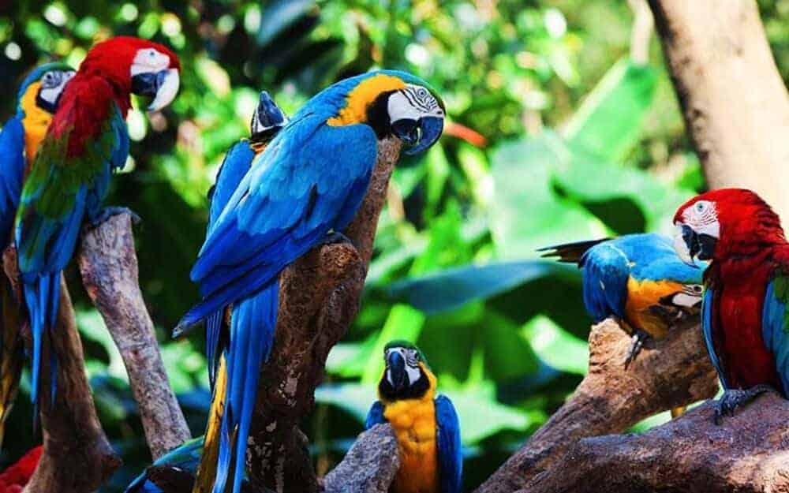

O BioZoo Rio foi fundado em 2025, com o objetivo de proporcionar um espaço educativo e de preservação para diversas espécies de animais. Localizado na Quinta da Boa Vista, no Rio de Janeiro, o zoológico tem como missão promover a conscientização ambiental e a proteção da biodiversidade.
Desde sua fundação, o zoológico tem trabalhado incansavelmente para criar um ambiente que simula os habitats naturais dos animais, proporcionando-lhes conforto e segurança.
O BioZoo Rio foi fundado pela Ana Beatriz Galdino , com sua equipe de empreendedores com paixão pela vida selvagem e pela preservação ambiental. Desde o início, eles têm se dedicado a manter o zoológico como um centro de educação ambiental e de conservação de espécies ameaçadas.
Os animais do BioZoo Rio são cuidados por uma equipe de veterinários e biólogos altamente qualificados, que garantem a saúde e o bem-estar de cada espécie. A alimentação, o ambiente e a interação com os visitantes são todos planejados para atender às necessidades de cada animal.
A seguir um video sobre os cuidados dos animais em um dos nossos zoologicos que se encontra em São Paulo.
O zoológico tem também um programa de reprodução de espécies ameaçadas e participa ativamente de projetos de preservação em parceria com diversas organizações ambientais.
O BioZoo Rio oferece uma experiência segura e educativa para todos os seus visitantes. Equipado com áreas de descanso, banheiros e acessibilidade para deficientes, o zoológico se preocupa em garantir que todos tenham uma visita confortável e segura.
Além disso, guias e monitores estão disponíveis para oferecer informações sobre as espécies e o trabalho do zoológico, proporcionando uma experiência enriquecedora para o público de todas as idades.
Um patrimônio histórico localizado na Quinta da Boa Vista.
A Casa Imperial do Zoológico é um dos marcos históricos da Quinta da Boa Vista. Originalmente pertencente à Família Imperial Brasileira, a estrutura serviu como residência e local de lazer para a realeza.
Com o tempo, tornou-se parte do Zoológico do Rio de Janeiro, preservando sua memória histórica.
A Casa Imperial apresenta um estilo arquitetônico neoclássico, com amplos salões, colunas imponentes e detalhes históricos preservados.
Os jardins ao redor são um reflexo do paisagismo imperial, proporcionando um ambiente majestoso aos visitantes.
Veja mais sobre a Casa Imperial e sua história: